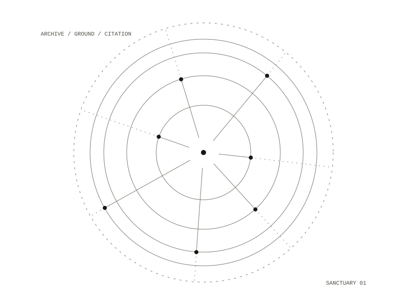
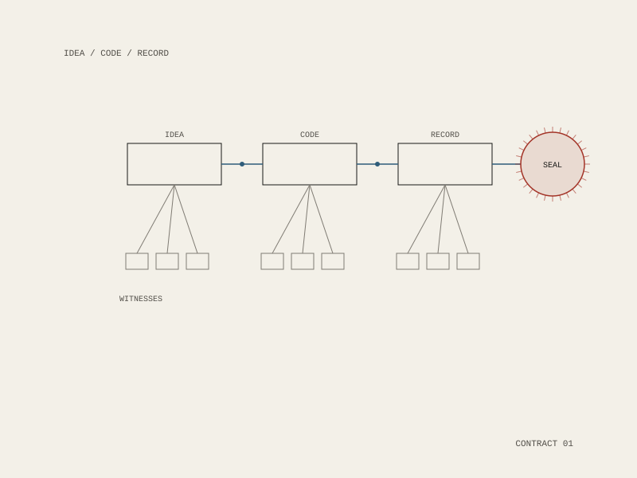
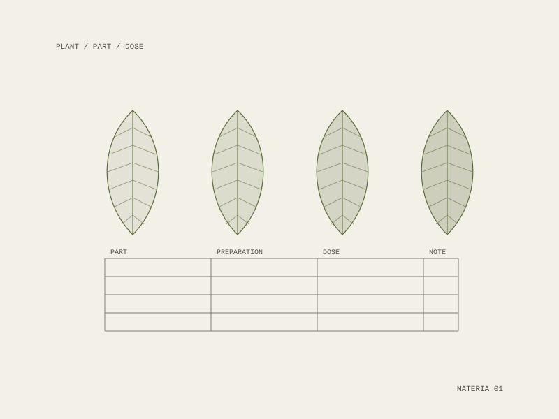

Ritual technologies for more livable futures.
Art, infrastructures and herbal practice at the intersections of memory, networks, value, care and the more-than-human.
Selected Work

Order of the Meridian
A festival apparatus that performs one machine operation slowly enough that you can name what it destroyed.
STWST84x12 HAUNTED · Stadtwerkstatt, Linz · 7–13 September 2026

Sanctuary Cell Division
A local language model grounded in your own archive, on hardware you control. Nothing leaves the machine.
Panel at HOPE (Hackers on Planet Earth), 2026 · Presented at Ars Electronica 2026, Linz

Evertunes
The conquest of the American west told in 99 generative video-and-music stories, released chapter by chapter.

Ethical Imagination
Ideas turned into code and recorded as contracts: verifying origin and intent in an era of forgery and deepfakes.
Visions2030 Fellowship, 2020

Heddatron
Five robots played Ibsen's men in an absurdist Hedda Gabler: robotics built by Botmatrix.
HERE Arts Center, New York, 2006 · Les Frères Corbusier, dir. Alex Timbers

Mugworts Free Herbal Clinic
A free herbal clinic: medicine as something a community makes and keeps, not something it buys.
DWeb NYC 2023 · DWeb Camp 2024 · HOPE 2025, 2026 · Herbal Theurgy at Black Sky, Crete, 2025
Index
About
Eon Meridian is an artist, writer, technologist and herbalist working across computation, medicinal plants, ritual, sound, diagrams and resilient infrastructure. This site is an evolving record of works, collaborations, institutions and experiments. Its sibling, Caerjar, is the vessel much of this work is built inside.